Hi, I'm Quentin Adolphe
Software Engineering | Robotics | Machine Learning
Professional Experience
My work history and research roles.
General Motors
Dimensional Systems Engineer
- Built a Python pipeline on Databricks to replace a brittle Excel/VBA workbook, processing ~49K deliverable rows across ~100 vehicle programs in under 30 seconds
- Developed a Streamlit dashboard with OAuth login and write-back to SharePoint Lists, distributed as a self-updating executable to 50+ engineers via CI/CD
CFD Automation Engineer
- Modernized legacy Tkinter GUI to a React/Electron and Flask monorepo to streamline pre-processing, submission, monitoring, and postprocessing work.
- Built a JSON-driven UI engine with strict TypeScript schemas, shared MUI component library and NPM Workspaces.
- Orchestrated HPC interactions via Flask REST APIs; delivered dashboards and NumPy/Pillow post-processing.
- Engineered a Python analytics framework using Pandas to automate ETL and evaluate tire parameters (stiffness, friction) on vehicle stability, implementing metrics like wheel slip, friction circles, and yaw rate.
Software Validation Engineer
- Full stack development of Utility File applications, including a custom generator tool to streamline the flash development process.
- Created and automated an application to validate ECU flash process according to Software-Defined Vehicle specifications.
Teaching Assistant
- Teaching Assistant for Computer Vision course.
Software Engineering Intern
- Full stack development of a modernized life insurance app with database integration.
- Implemented pages with React.js and JSX, and created metadata.
School Work
Academic projects and course research.
Turtlebot Maze Traversal
Implemented Dijkstra's algorithm and a PD controller to navigate a robot through a maze.
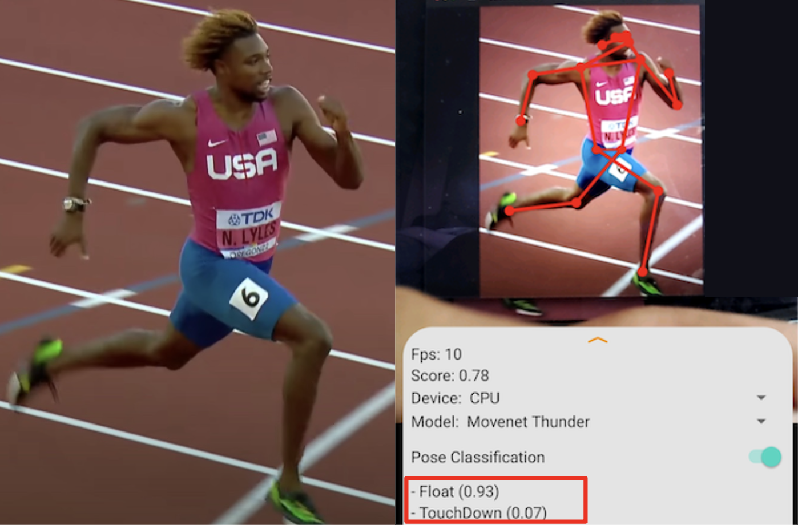
Running Form Analysis
Android app using TensorFlow to estimate joint positions and classify running motion phases (floating or touchdown).
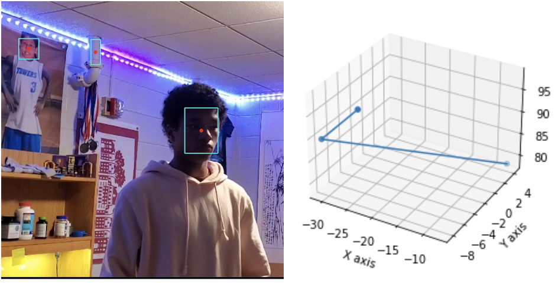
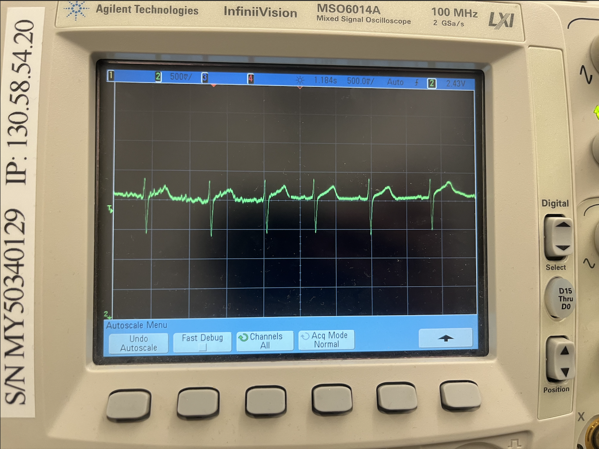
Heart Rate Monitor
Designed and built a monitor using an ECG measurement system and Nucleo board.
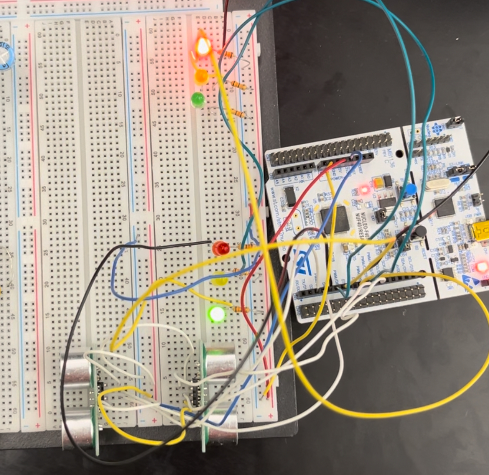
Traffic Light Controller
State machine based traffic light controller for a T-intersection using ultrasonic sensors.
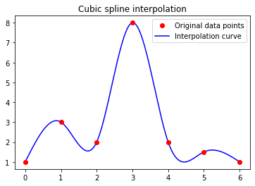
Cubic Spline Interpolation
Curve fitting using piecewise third-order polynomials and Gauss-Seidel method.
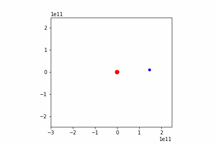
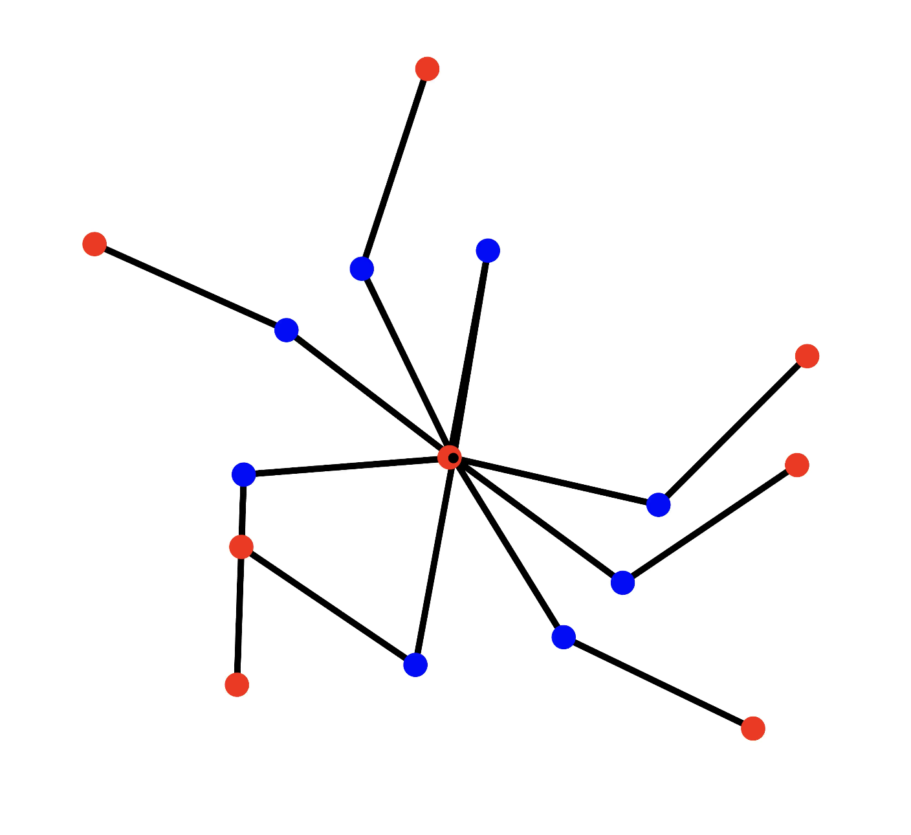
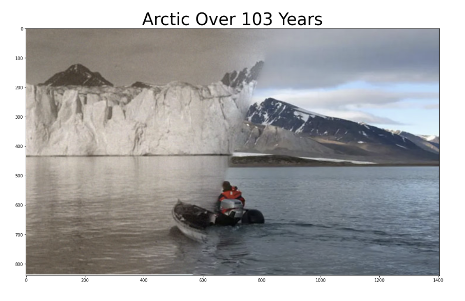
Hybrid Images
Blending images using Laplacian masks and frequency domain manipulation.
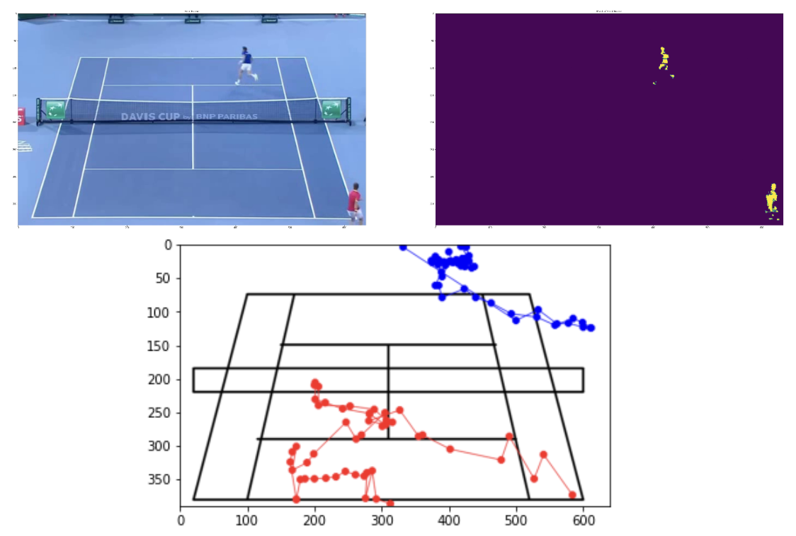
Tennis Player Tracking
Tracking objects over time using temporal averaging and morphological operators.
Side Projects
Entrepreneurial ventures and personal coding projects.
Swatbloc (Headless Commerce)
Designed a type-safe headless commerce SDK within a Turbo monorepo. Built a Generative UI engine using Google Gemini for natural language theme generation.

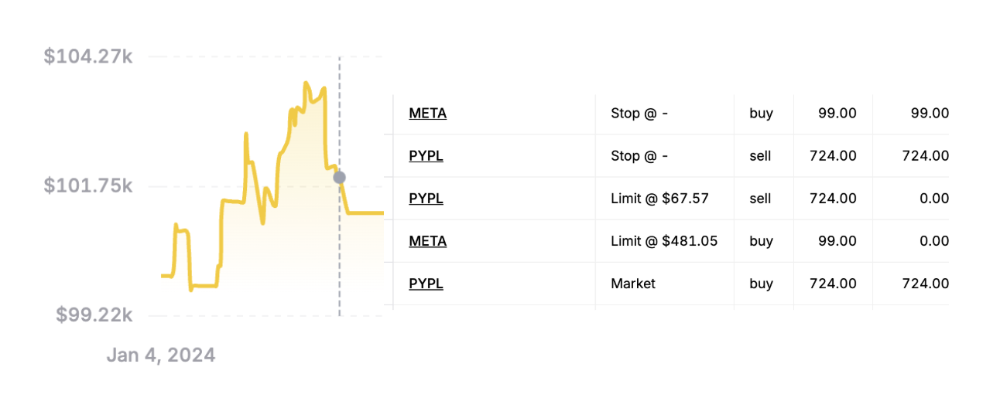
Automated Stock Trading
Automated day trading bot using ChatGPT sentiment analysis on news headlines to predict stock performance.
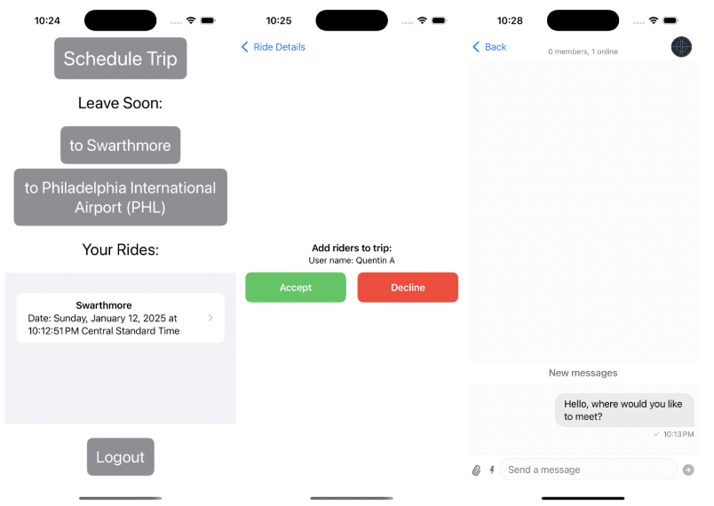
College Ride Share
Ride sharing app for Swarthmore College students to coordinate airport trips and split costs.
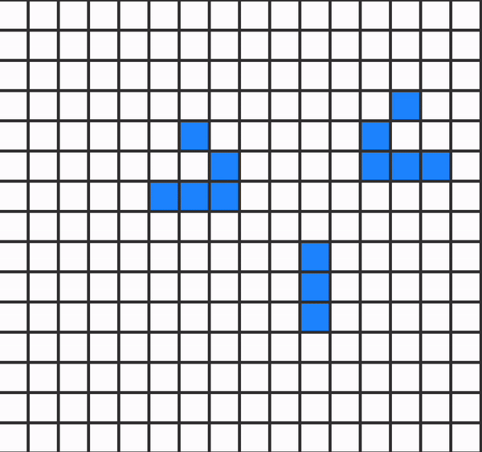